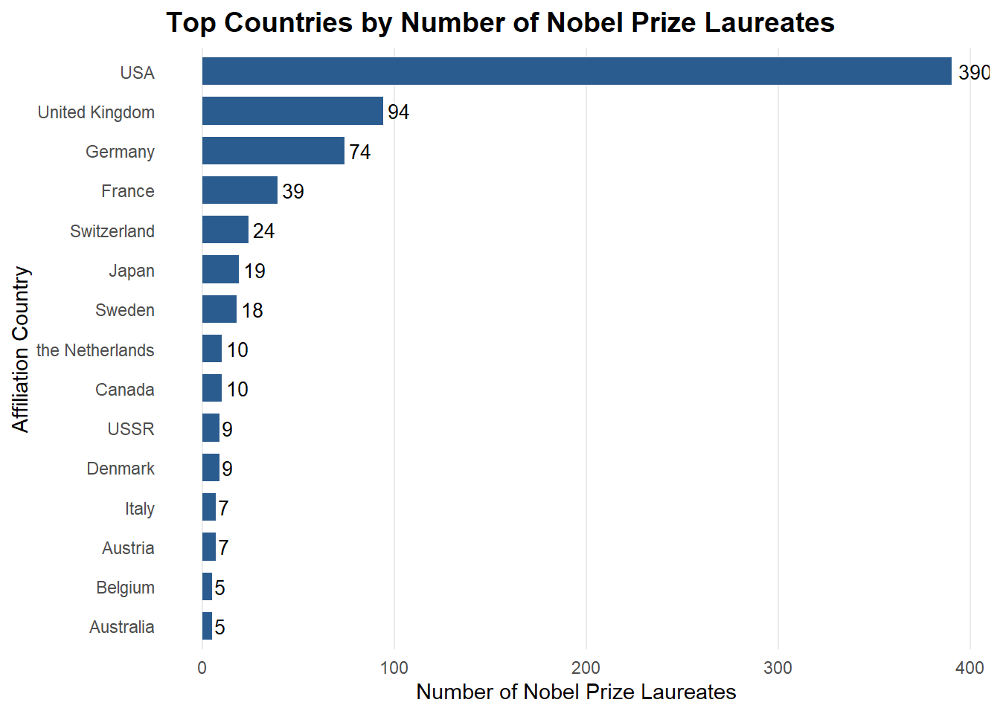
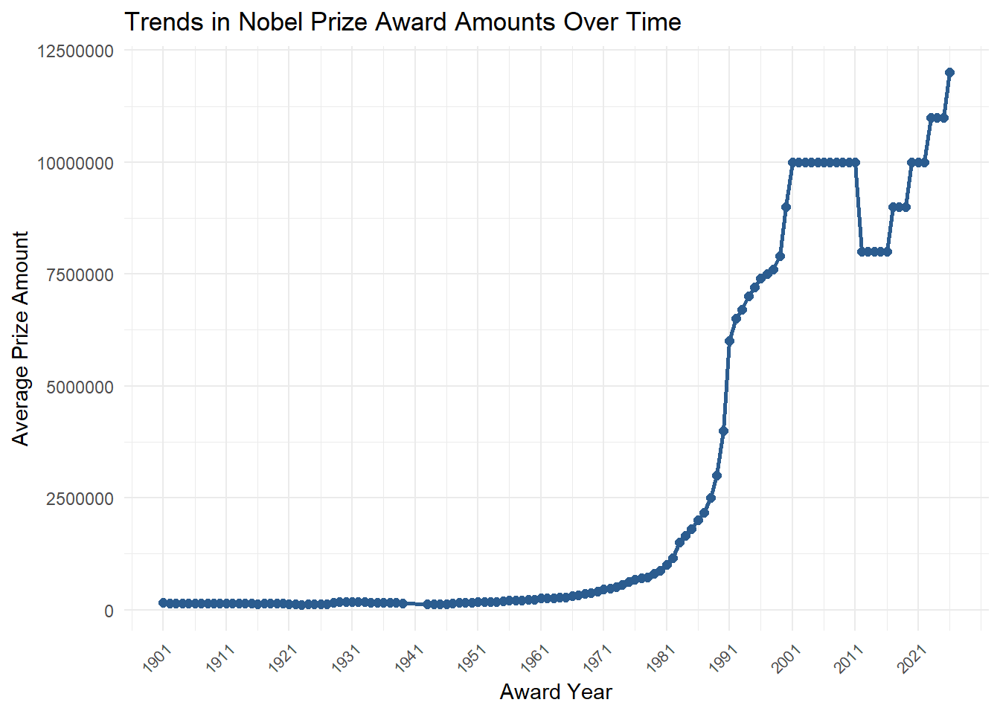

The Nobel Prize organization provides public APIs for accessing structured Nobel Prize data. Using one or both of the APIs available at the Nobel Prize Developer Zone, your task is to use JSON data to investigate and answer four interesting, data-driven questions.
At least one of your questions should go beyond simple counts and require joining, filtering, or comparing fields across the data (e.g., “Which country lost the most Nobel laureates—born there but awarded as a citizen of another country?”).
Requirements Use one or both Nobel Prize APIs to retrieve data in JSON format.
In R, load and transform the JSON data into tidy data frames.
Formulate four questions that can be answered from the data.
For each question:
Describe the question
Show the code used
Present the answer (table, summary, or plot)
Codebase
library(httr2)library(jsonlite)library(tidyverse)
── Attaching core tidyverse packages ──────────────────────── tidyverse 2.0.0 ──
✔ dplyr 1.2.0 ✔ readr 2.2.0
✔ forcats 1.0.1 ✔ stringr 1.6.0
✔ ggplot2 4.0.3 ✔ tibble 3.3.1
✔ lubridate 1.9.5 ✔ tidyr 1.3.2
✔ purrr 1.2.1
── Conflicts ────────────────────────────────────────── tidyverse_conflicts() ──
✖ dplyr::filter() masks stats::filter()
✖ purrr::flatten() masks jsonlite::flatten()
✖ dplyr::lag() masks stats::lag()
ℹ Use the conflicted package (<http://conflicted.r-lib.org/>) to force all conflicts to become errors
library(naniar)library(lubridate)library(knitr)
url="https://api.nobelprize.org/2.1/laureates?limit=1000"# make API requestresponse<-request(url) %>%req_perform()# Extract JSON response as textjson_data <-resp_body_string(response)# Parse JSON data<-fromJSON(json_data)# check object typeclass(data)
[1] "list"
# Convert the list of elements into a clean tibblelaureates_df <-bind_rows(data$laureates)class(laureates_df)
# A tibble: 1,008 × 10
id fullName gender birth_country birth_country_now nobelPrizes_awardYear
<chr> <chr> <chr> <chr> <chr> <chr>
1 745 A. Michae… male USA USA 2001
2 102 Aage Niel… male Denmark Denmark 1975
3 779 Aaron Cie… male British Prot… Israel 2004
4 259 Aaron Klug male Lithuania Lithuania 1982
5 1004 Abdulraza… male <NA> <NA> 2021
6 114 Abdus Sal… male India Pakistan 1979
7 982 Abhijit B… male India India 2019
8 981 Abiy Ahme… male Ethiopia Ethiopia 2019
9 843 Ada E. Yo… female British Mand… Israel 2009
10 866 Adam G. R… male USA USA 2011
# ℹ 998 more rows
# ℹ 4 more variables: nobelPrizes_category <chr>,
# nobelPrizes_dateAwarded <chr>, nobelPrizes_prizeAmount <int>,
# nobelPrizes_affiliations_country <chr>
# A tibble: 1,008 × 10
id fullName gender birth_country birth_country_now nobelPrizes_awardYear
<chr> <chr> <chr> <chr> <chr> <chr>
1 745 A. Michae… male USA USA 2001
2 102 Aage Niel… male Denmark Denmark 1975
3 779 Aaron Cie… male British Prot… Israel 2004
4 259 Aaron Klug male Lithuania Lithuania 1982
5 1004 Abdulraza… male <NA> <NA> 2021
6 114 Abdus Sal… male India Pakistan 1979
7 982 Abhijit B… male India India 2019
8 981 Abiy Ahme… male Ethiopia Ethiopia 2019
9 843 Ada E. Yo… female British Mand… Israel 2009
10 866 Adam G. R… male USA USA 2011
# ℹ 998 more rows
# ℹ 4 more variables: nobelPrizes_category <chr>,
# nobelPrizes_dateAwarded <chr>, nobelPrizes_prizeAmount <int>,
# nobelPrizes_affiliations_country <chr>
# Since nobelPrizes_awardYear and nobelPrizes_dateAwarded are in chr data types needs to convert it into date clean_df <- clean_df %>%mutate(nobelPrizes_awardYear =as.integer(nobelPrizes_awardYear))
Q1:Which laureates have won the Nobel Peace Prize?
This question explores the individuals who have received the Nobel Peace Prize from 1901 to 2026.
Edgar Algernon Robert Gascoyne-Cecil, 1st Viscount Cecil of Chelwood
1937
Carlos Saavedra Lamas
1936
Carl von Ossietzky
1935
Arthur Henderson
1934
Sir Norman Angell (Ralph Lane)
1933
Jane Addams
1931
Nicholas Murray Butler
1931
Lars Olof Jonathan (Nathan) Söderblom
1930
Frank Billings Kellogg
1929
Ferdinand Buisson
1927
Ludwig Quidde
1927
Aristide Briand
1926
Gustav Stresemann
1926
Charles Gates Dawes
1925
Sir Austen Chamberlain
1925
Fridtjof Nansen
1922
Christian Lous Lange
1921
Karl Hjalmar Branting
1921
Léon Victor Auguste Bourgeois
1920
Henri La Fontaine
1913
Elihu Root
1912
Alfred Hermann Fried
1911
Tobias Michael Carel Asser
1911
Auguste Marie François Beernaert
1909
Paul Henri Benjamin Balluet d’Estournelles de Constant, Baron de Constant de Rebecque
1909
Fredrik Bajer
1908
Klas Pontus Arnoldson
1908
Ernesto Teodoro Moneta
1907
Louis Renault
1907
Theodore Roosevelt Jr.
1906
Baroness Bertha Sophie Felicita von Suttner, née Countess Kinsky von Chinic und Tettau
1905
William Randal Cremer
1903
Charles Albert Gobat
1902
Élie Ducommun
1902
Frédéric Passy
1901
Jean Henry Dunant
1901
Above table shows the list of laurates who won the nobel peace prize from year 1901 to 2026. Jean Henry Dunant and Frédéric Passy received the first Nobel Peace Prize in 1901.
Q2 Which country has produced the highest number of Nobel Prize laureates?
nobel_laureates_country<-clean_df%>%# prevents counting the same laureate more than once for the same country.distinct(id, nobelPrizes_affiliations_country) %>%filter(!is.na(nobelPrizes_affiliations_country)) %>%count(nobelPrizes_affiliations_country )%>%arrange(desc(n))%>%slice_head(n =15)ggplot(nobel_laureates_country, aes(x =reorder(nobelPrizes_affiliations_country,n) , y =n)) +geom_col(fill ="#2b5c8f", width =0.7) +coord_flip()+geom_text(aes(label = n), hjust =-0.2,size =3.5)+labs(title ="Top Countries by Number of Nobel Prize Laureates",x ="Affiliation Country",y ="Number of Nobel Prize Laureates") +theme_minimal()+theme(panel.grid.major.y =element_blank(),panel.grid.minor =element_blank(),plot.title =element_text(face ="bold", size =14),plot.subtitle =element_text(color ="gray30") )

USA is the only country that has produced the highest number of Nobel Prize laureates (390) followed by United Kingdom (94), Germany (74). There is a substantial difference between the United States and the other countries. These results may be influenced by the laureates’ Nobel Prize institutional affiliations, as the data reflects the countries where their affiliated institutions are located rather than necessarily their birth countries or nationalities.
Q3 How has the prize amount changed over time?
prize_amount_year<-clean_df%>%mutate(nobelPrizes_awardYear =as.numeric(nobelPrizes_awardYear)) %>%group_by(nobelPrizes_awardYear)%>%summarize(avg_prize_amount =mean(nobelPrizes_prizeAmount, na.rm =TRUE))%>%arrange(nobelPrizes_awardYear)ggplot(prize_amount_year,aes(x = nobelPrizes_awardYear, y = avg_prize_amount)) +geom_line(color ="#2b5c8f", linewidth =1) +geom_point(color ="#2b5c8f", size =2) +scale_x_continuous(breaks =seq(1901, 2026, by =10)) +labs(title ="Trends in Nobel Prize Award Amounts Over Time",x ="Award Year",y ="Average Prize Amount" ) +theme_minimal()+theme(axis.text.x =element_text(angle =45,hjust =1,size =8 ) )

The average Nobel Prize amount remained relatively stable from 1901 to 1951, followed by a slight increase between 1955 and 1981. From 1981 to 2001, the prize amount increased exponentially. It then remained relatively stable for approximately 10 years before decreasing. After that, it gradually increased again, reaching an average of approximately 12,500,000 in recent years.
Q4 Which country lost the most Nobel laureates—born there but awarded as a citizen of another country?.
Austria, Canada, France, Israel, Sweden, Switzerland, United Kingdom, USA
United Kingdom
24
Australia, Canada, Switzerland, USA
Canada
14
USA
France
12
Argentina, Germany, Sweden, Switzerland, Tunisia, USA
Austria-Hungary
11
Austria, Czechoslovakia, Germany, Hungary, Sweden, Switzerland, USA
Prussia
11
Germany, USA
Russia
10
Belgium, Switzerland, United Kingdom, USA, USSR
Russian Empire
10
Finland, France, Germany, Sweden, USA, USSR
Scotland
9
Canada, United Kingdom, USA
the Netherlands
9
Germany, Switzerland, United Kingdom, USA
Germany lost the most Nobel laureates, born there but awarded as a citizen of another country
Conclusion
The USA has the most laureates (390), far ahead of the United Kingdom (94) and Germany (74). The average prize amount stayed low until the mid-1900s, rose sharply from the 1980s, and reached about 12.5 million in recent years. Germany lost the most laureates (26),closely followed by united kingdom (24), most of the countries lost Nobel laureates to USA.
Citaion
Anthropic. (2026). Claude [Large language model]. https://claude.ai/share/754d7628-df31-4840-bab5-0fe0b63787b1